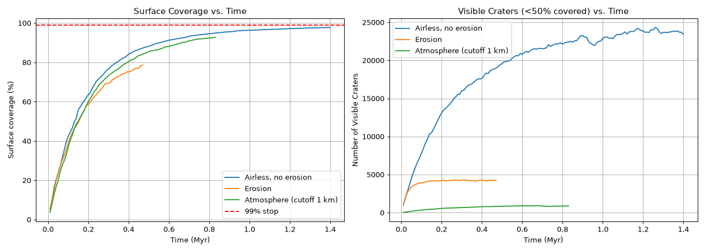
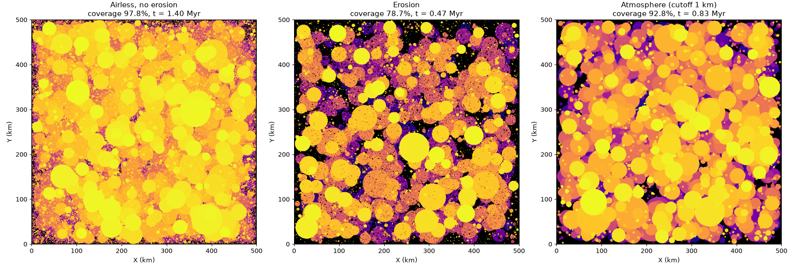

Impact-Crater Saturation Simulation
ASTR 3750 final project, Prof. Paul Hayne, December 2024 · Solo project · Python / Jupyter
v2 rebuild: October 2026
What it is
A planet's surface keeps getting hit. Eventually it is so covered in craters that new ones just erase old ones, and the number of craters you can see stops growing. This is called saturation. I simulated a 500 km × 500 km surface getting hit over time to see how fast it saturates.
My role
I did all of it: the assumptions, the code and the report.
v1: the 2024 course project
- Impact rate: 1 impact per 1000 years for impactors larger than 10 km, plus about 100 smaller impactors per 1000-year step.
- Sizes: smaller impactors (0.1–9.99 km) come from a power-law distribution (alpha = 2.5), so small ones are much more common than big ones.
- Crater size: set by impact energy, not just impactor size: D = 1.161 · d^0.78 · v^0.44. Asteroids (10–20 km/s) and comets (30–70 km/s) at a 9:1 ratio.
- Recognizability: a crater counts as visible while less than half of its area is covered by later craters. I chose an area-overlap rule over a crater-rim rule because tracking 360 rim points per crater was too slow on my computer.
- No erosion and no atmosphere in v1.
v1 results (from my report):
- Coverage reached about 25% at ~80k years, 50% at ~200k and 75% at ~400k, and approached "100%" around 1M years.
- With 10,000 impactors the surface reached 98.23% and never quite hit 100%.
- Adding small craters raised the visible-crater count; at high saturation, the visible count dropped.
- The power-law run aimed at 100% coverage never finished.
v2: the 2026 rebuild
Same physics as v1, plus:
- Why 100% never arrives: each new crater mostly lands on already-cratered ground, so coverage creeps up like 1 − e^(−kN). The rebuilt run took about 2,400 steps to reach 99%.
- Speed: each crater only updates the grid cells inside its own box, so a run to 99% coverage takes seconds instead of not finishing.
- True visibility: the grid remembers which crater is on top in each cell, so old craters disappear as they get covered.
- Stop rules: stop at 99% coverage, or when the visible-crater count levels off (equilibrium).
- Erosion (new): each crater starts at a depth of 0.2 × its diameter, loses 5 m per 1000 years, and is gone below 20 m.
- Atmosphere (new): impactors smaller than a cutoff size burn up and never make a crater.
| Case (v2, seed 1) | Visible craters | Coverage |
|---|---|---|
| Airless, no erosion | 23,443 | 97.8% |
| With erosion | 4,201 | 78.7% |
| 1 km atmosphere cutoff | 880 | 92.8% |
All three runs stopped because the visible-crater count leveled off, before reaching 99% coverage. The erosion settings are first estimates.
Figures

Coverage and visible crater count vs. time (v2).
Final maps: airless, with erosion, and with an atmosphere cutoff (v2).Code
On GitHub: github.com/adrianayalav-a11y